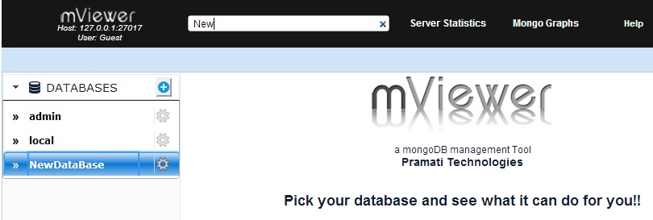
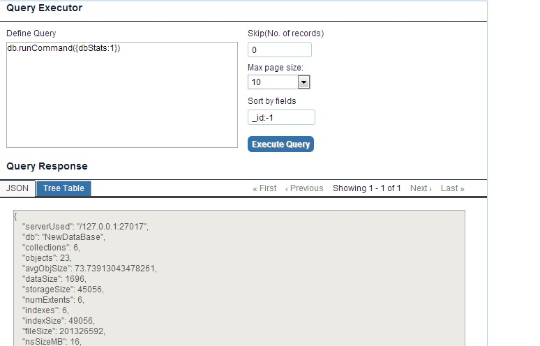

The Spotlight Search command enables user to navigate to any DB, Collection, link, button, text field just by typing 3 letters of its visible Name.
The spotlight search command bar displays on top of the screen. See figure below.

You can execute any command using this bar.
The selection is highlighted in blue.
See figure below.

The database New opens and displays statistics.

Multiple Elements are highlighted in blue. In this case, NewDataBase and NewCollection are highlighted
By Default first element on the page gets selected. (Element Name with white text is the element highlighted)
See figure below.

Use Up, Down, Right and Left arrow keys to navigate to the desired element See figure below, where NewCollection is selected by clicking on down or Right arrow keys and see that the selected element Text gets highlighted in white.

The collection page displays.

Likewise, repeat the above steps to open any visible DB, Collection, Grid Bucket, Users and Indexes, Link, Button, Text Field present on the page.